1과목: 청소년 상담의 이론과 실제
1. 청소년상담자의 역할로 옳지 않은 것은?
2. 화상상담의 단점으로 옳은 것을 모두 고른 것은?
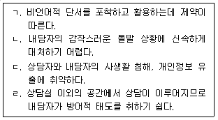
3. 게슈탈트 상담에 관한 설명으로 옳은 것은?
4. 자해 청소년에 대한 상담개입 방법으로 옳지 않은 것은?
5. 다음 사례에서 상담자가 공통적으로 적용한 상담이론은?
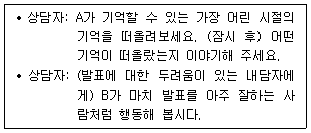
6. 다음 사례의 상담자가 사용한 상담기법의 적용 시점으로 옳은 것은?
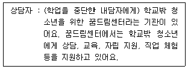
7. 다음 사례에 대한 행동적 개입으로 옳지 않은 것은?
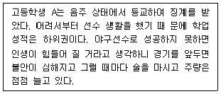
8. 사례개념화에 관한 설명으로 옳지 않은 것은?
9. 다음에서 설명하는 상담이론은?
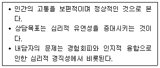
10. 상담기법에 관한 설명으로 옳지 않은 것은?
11. 분석심리학에 관한 설명으로 옳은 것을 모두 고른 것은?
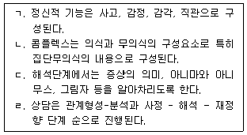
12. 현대 정신분석 이론가와 주요개념의 연결이 옳지 않은 것은?
13. 스마트폰 과의존에 관한 설명으로 옳지 않은 것은?
14. 다음 상황에 해당하는 키치너(K. Kitchener)의 윤리적 의사결정 원칙으로 옳은 것은?
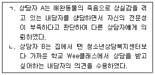
15. 현실치료에 관한 설명으로 옳지 않은 것은?
16. 청소년상담사 윤리강령에 명시된 ‘내담자의 권리와 보호’에 관한 내용으로 옳은 것은?
17. 해결중심상담에 관한 설명으로 옳은 것을 모두 고른 것은?
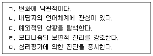
18. 교류분석에 관한 설명으로 옳지 않은 것은?
19. 청소년상담에 관한 설명으로 옳지 않은 것은?
20. 다음에서 설명하는 인지적 오류로 옳은 것은?
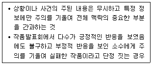
21. 합리정서행동상담(REBT)에 관한 설명으로 옳은 것은?
22. 상담단계와 과업의 연결이 옳은 것을 모두 고른 것은?
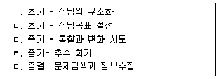
23. 지역사회 청소년통합지원체계(CYS-Net, 청소년안전망)에 관한 설명으로 옳지 않은 것은?
24. 청소년상담에서 사전동의(informed consent)의 내용으로 옳지 않은 것은?
25. 청소년상담의 통합적 접근에 관한 설명으로 옳지 않은 것은?
2과목: 상담연구방법론의 기초
26. 다음 사례에서 연구가설이 표현하고 있는 효과는?
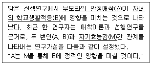
27. 가설 설정 및 검정에 관한 설명으로 옳지 않은 것은?
28. 연구 수행에 관한 설명으로 옳은 것을 모두 고른 것은?
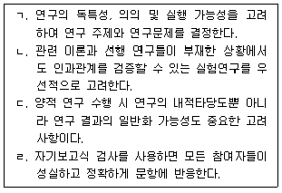
29. 상담 연구에 관한 일반적인 설명으로 옳지 않은 것은?
30. 양적 연구 패러다임에 관한 설명으로 옳은 것은?
31. 양적 연구의 타당도에 관한 설명으로 옳지 않은 것은?
32. 통계적 검정력(statistical power)에 관한 설명으로 옳은 것을 모두 고른 것은?
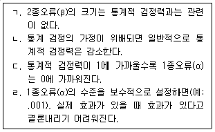
33. 척도의 타당도를 평가할 수 있는 방법을 모두 고른 것은?
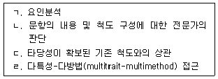
34. 측정도구 선정 및 사용에 관한 설명으로 옳은 것은?
35. 척도의 신뢰도(reliability)에 관한 설명으로 옳은 것을 모두 고른 것은?
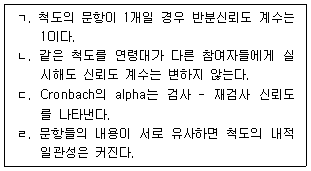
36. 다음 각각의 사례에 적절한 분석 방법을 옳게 짝지은 것은?
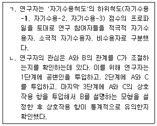
37. 논문 작성 시 ‘논의 및 결론’에 포함될 내용에 관한 설명으로 옳은 것은?
38. 논문 작성 시 ‘연구방법’에 포함될 내용으로 옳은 것은?
39. 진실험설계가 충족해야 할 조건으로 옳지 않은 것은?
40. 자료의 총체로부터 귀납적으로 이론을 개발하는 방법으로서, 연구자는 수집한 자료에 기초하여 가설을 설정하고 검증하며, 분석적 귀납법이라고 부르는 과정을 통해 이론을 개발하는 연구방법은?
41. 단순선형회귀분석에서 총변동(SST; sum of squares total) 중 선형관계로 설명되지 않는 변동(SSE; sum of squares error)이 차지하는 비중이 1/5이라면 결정계수 R2의 값은?
42. 집단간 설계에 해당하는 것을 모두 고른 것은?
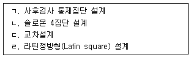
43. 질적 연구의 특징에 관한 설명으로 옳지 않은 것은?
44. 인간참여자를 대상으로 한 연구에서 연구 참여에 대한 동의를 받을 때 고지해야 하는 사항으로 옳지 않은 것은?
45. 연구부정행위에 관한 설명으로 옳지 않은 것은?
46. 혼합연구방법에 관한 설명으로 옳은 것을 모두 고른 것은?
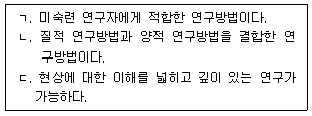
47. 유사실험설계(quasi-experimental design)에 관한 설명으로 옳지 않은 것은?
48. 상담연구에서 단일사례연구설계(single-case research design)에 관한 설명으로 옳지 않은 것은?
49. 모의상담연구에 관한 설명으로 옳지 않은 것은?
50. 실험실 실험연구에 관한 설명으로 옳지 않은 것은?
3과목: 심리측정 평가의 활용
51. 다음에서 설명하고 있는 개념으로 옳은 것은?
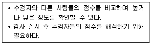
52. 심리검사와 평가의 윤리에 관한 설명으로 옳은 것은?
53. 심리평가의 목적에 관한 설명으로 옳지 않은 것은?
54. 심리검사의 역사에 관한 설명으로 옳지 않은 것은?
55. 면담에 관한 설명으로 옳은 것은?
56. 행동평가에 관한 설명으로 옳지 않은 것은?
57. 내담자의 특성을 측정하기 위한 심리검사 선정이 적절한 것은?
58. 심리검사의 실시와 해석에 관한 설명으로 옳지 않은 것은?
59. 심리검사에 관한 설명으로 옳지 않은 것은?
60. 전통적 심리검사의 제작 순서로 옳은 것은?
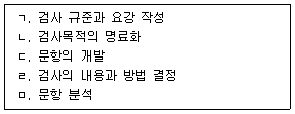
61. 심리검사의 신뢰도와 타당도에 관한 설명으로 옳은 것은?
62. 다음 설명에 해당하는 K-WISC-V의 소검사는?
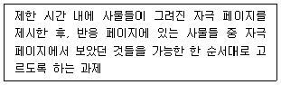
63. K-WAIS-Ⅳ의 소검사 중 핵심 소검사가 아닌 것은?
64. 지능 이론에 관한 설명으로 옳은 것을 모두 고른 것은?
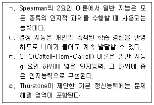
65. MMPI-2에서 재구성 임상척도의 T점수가 65 이상일 때 해석으로 옳지 않은 것은?
66. 홀랜드(Holland) 직업적성검사에서 다음의 성격 특징을 포함하는 유형은?
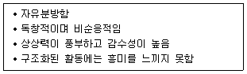
67. MBTI에서 정보를 수집하고 지각하는 지표로 옳은 것은?
68. MMPI-A에 관한 설명으로 옳은 것은?
69. NEO-PI-R에 관한 설명으로 옳은 것은?
70. TCI 척도에 관한 설명으로 옳은 것을 모두 고른 것은?
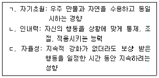
71. PAI의 임상척도로 옳지 않은 것은?
72. 한국판 아동ㆍ청소년 행동평가 척도(K-CBCL 6-18)에 관한 설명으로 옳은 것은?
73. 투사검사에 관한 설명으로 옳은 것을 모두 고른 것은?
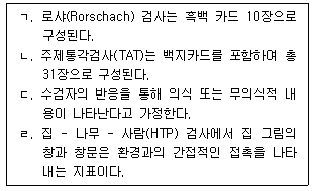
74. 투사적 검사의 장점으로 옳은 것을 모두 고른 것은?
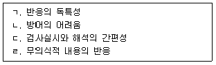
75. 문장완성검사(SCT)에 관한 설명으로 옳지 않은 것은?
4과목: 이상심리
76. 이상심리의 행동주의 모형에 관한 설명으로 옳지 않은 것은?
77. DSM-5에 포함되지 않은 정신장애는?
78. 정신장애 분류의 장점으로 옳지 않은 것은?
79. DSM-5의 지적장애 중등도 수준에 해당하는 것을 모두 고른 것은?
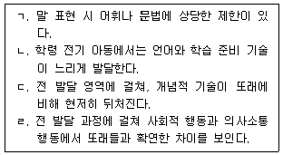
80. 다음 사례에 해당하는 DSM-5의 신경발달장애는?
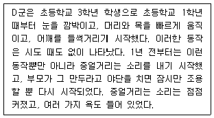
81. DSM-5에서 조현병의 음성증상은?
82. DSM-5의 망상장애 아형(Subtypes)으로 옳지 않은 것은?
83. DSM-5의 각 조현병 스펙트럼 장애와 그 진단기준을 옳게 짝지은 것을 모두 고른 것은?
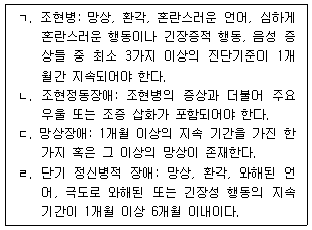
84. DSM-5의 조증 삽화 진단기준으로 옳지 않은 것은?
85. 다음에 해당하는 우울증의 유형은?
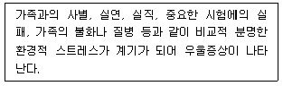
86. DSM-5의 불안장애 하위유형에 해당하는 것을 모두 고른 것은?
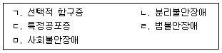
87. DSM-5의 공황장애에 관한 설명으로 옳지 않은 것은?
88. 다음 사례에 해당하는 DSM-5의 장애는?
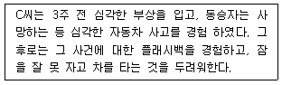
89. DSM-5의 강박장애에 관한 설명으로 옳지 않은 것은?
90. 다음에 해당하는 해리성 정체감 장애 관련 이론은?
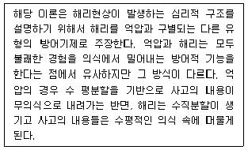
91. 다음에 해당하는 DSM-5의 신체증상 및 관련 장애는?
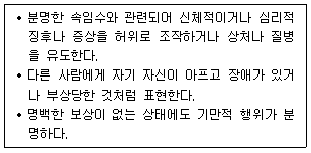
92. 다음 사례에서 보이는 행동을 설명하는 DSM-5의 진단으로 옳은 것은?
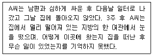
93. 다음 사례에 해당하는 DSM-5의 급식 및 섭식장애는?
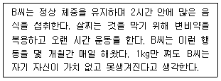
94. 불면장애의 치료를 위한 수면위생 교육에 포함되지 않는 것은?
95. DSM-5의 성별 불쾌감 장애 진단기준으로 옳지 않은 것은?
96. DSM-5의 품행장애 진단기준으로 옳지 않은 것은?
97. DSM-5의 병적 도벽에 관한 설명으로 옳은 것은?
98. DSM-5에 포함된 ‘임상적 주의의 초점이 될 수 있는 기타의 상태’ 중 ‘의학적 치료 및 기타 건강관리에 대한 접근과 관련된 문제’에 속하지 않는 것은?
99. 다음 사례에 해당하는 DSM-5의 성격장애는?
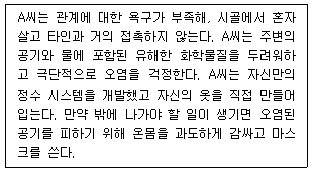
100. ‘성격장애에 대한 대안적 DSM-5 모델’에서 도출될 수 있는 성격장애를 모두 고른 것은?
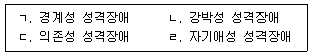